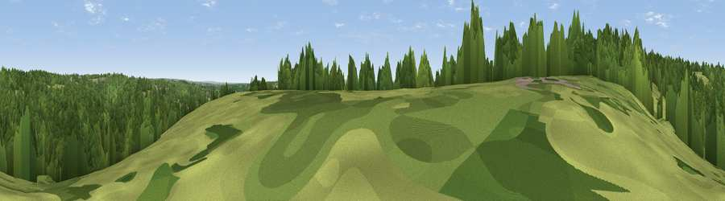

Viewpoint near Handcross
#44074 in England · top 86% of its area beats it · near Handcross · path 287 mWhere it is
The exact computed spot (TQ 26672 29356). Click the marker for map links.
Public access: the nearest public right of way is about 287 m away — the final stretch may cross private land. Computed from Natural England's CRoW access layer and OpenStreetMap rights of way — not the legal definitive map. Always verify locally.
The view, rendered

A 360° render of this exact spot computed from the terrain model, tree cover and land cover — summer colours, afternoon light, calibrated against photographs of famous viewpoints. Real trees, hedges and buildings will differ in detail.
The panorama
Grey silhouette: terrain skyline in each direction (720 bearings, Earth curvature and refraction included). Dashed green: skyline with trees (+15 m) and buildings (+8 m) as obstacles. Blue strip: how far the ground is visible on each bearing.
Where the view opens
Wedge length = distance to the farthest visible ground on that bearing (vegetation-aware). Rings at 10, 25 and 50 km.
What fills the view
73% woodland · 26% grassland
Angular shares of the visible panorama (visual magnitude), not map area. Landscape diversity 0.27 (0–1 Shannon).
Key numbers
More beautiful places nearby
The staircase of upgrades: each row has a higher view potential than everything closer. Driving times are estimates from straight-line distance, calibrated against real road routing — check an actual route before setting out.
| Place | Direction | Drive | Score |
|---|---|---|---|
| Viewpoint near Handcross | ESE · 0 km | ~1 min | 26.1 |
| Viewpoint near Handcross | ENE · 2 km | ~6 min | 34.2 |
| Viewpoint near Balcombe | E · 3 km | ~8 min | 40.1 |
| Viewpoint near Sharpthorne | ENE · 10 km | ~19 min | 41.0 |
| Viewpoint near Turners Hill | NE · 10 km | ~19 min | 47.7 |
| Viewpoint near Kingsfold | WNW · 11 km | ~21 min | 55.0 |
| Wolstonbury Hill | S · 16 km | ~28 min | 79.6 |
| Viewpoint near Westmeston | SSE · 17 km | ~30 min | 81.1 |
51.04960, -0.19422 · source: osm viewpoint · position refined by local search. Computed location — check access rights before visiting.